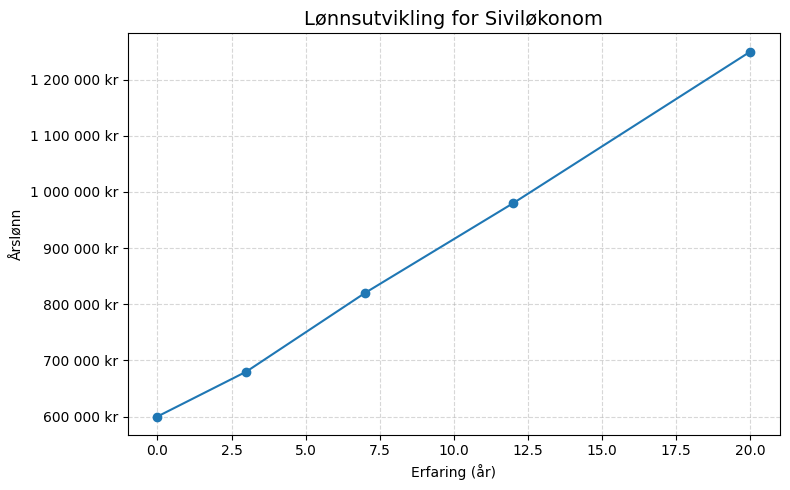
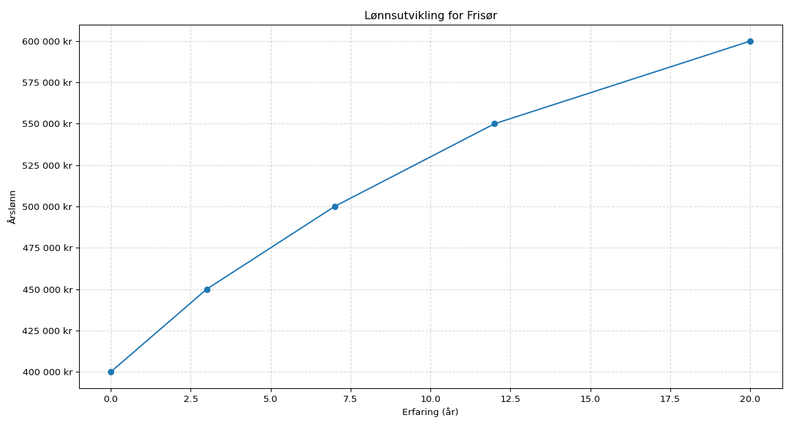

Siviløkonomer arbeider med økonomistyring, strategi og ledelse i privat og offentlig sektor. Utdanningen gir sterke analytiske ferdigheter innen finans og forretningsutvikling.
Master
Økonomi og administrasjon
Type: Mastergrad (5 år)
Lengde: 3 år bachelor + 2 år master
Varighet: 5 år
Kostnad: Lav-moderat (offentlig utdanning)
Opptakskrav: Generell studiekompetanse
Norge
Antall ansatte: ca. 42 000
Nye stillingsannonser per år: ca. 3 800
Estimerte nye jobber per år: 2 600
Etterspørsel: Stabil til økende (finans, analyse, strategi)
Globalt
Nye jobber globalt per år: ca. 320 000
Internasjonal konkurranseevne: Høy
Etterspørsel: Økende (digital økonomi, bærekraftsrapportering, finansanalyse)

Gjennomsnittslønn: ca. 720 000 kr/år
Total verdiskaping: ca. 58 mrd kr/år
Verdiskaping per ansatt: ca. 1 380 000 kr

Frisører arbeider med hårklipp, styling og kundebehandling i skjønnhetsbransjen. Utdanningen gir praktiske ferdigheter innen farge, form og hårpleie.
Fagbrev
Service og kreative fag
Type: Fagbrev
Lengde: 2 år VGS + 2 år lære
Total varighet: 4 år
Kostnad: Lav (lærlinglønn i læretiden)
Opptakskrav: Fullført ungdomsskole (til VGS)
Norge
Antall ansatte: ca. 11 000
Nye stillingsannonser per år: ca. 1 000
Estimerte nye jobber per år: ca. 700
Etterspørsel: Stabil (salong, helse/velvære, event)
Globalt
Nye jobber globalt per år: ca. 180 000
Internasjonal konkurranseevne: Middels-høy
Etterspørsel: Stabil/økende (skjønnhet, velvære, trendmarked)

Gjennomsnittslønn: ca. 470 000 kr/år
Total verdiskaping: ca. 4,5 mrd kr/år
Verdiskaping per ansatt: ca. 410 000 kr